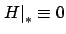

To illustrate the hybrid maximum principle, we apply it to the familiar light reflection example from Section 2.1.2. We model the propagation of a light ray through the  -dimensional space via the control system
-dimensional space via the control system
We seek to derive a necessary condition for a trajectory  that starts at a given initial point
that starts at a given initial point  at time
at time  , gets reflected off
, gets reflected off  at some time
at some time  , and arrives at a given final point
, and arrives at a given final point  at time
at time  to be locally time-optimal
with respect to trajectories that hit
to be locally time-optimal
with respect to trajectories that hit  at nearby points.
This optimal control problem is not inherently hybrid, since (7.38) is a standard control system and it is capable of producing reflected trajectories. However, the classical formulation of the maximum principle does not allow us to incorporate the fact that we are only interested in trajectories that hit
at nearby points.
This optimal control problem is not inherently hybrid, since (7.38) is a standard control system and it is capable of producing reflected trajectories. However, the classical formulation of the maximum principle does not allow us to incorporate the fact that we are only interested in trajectories that hit  along the way.
With the hybrid formulation, it is easy to do so by considering a hybrid system with a single discrete state location
along the way.
With the hybrid formulation, it is easy to do so by considering a hybrid system with a single discrete state location  (i.e.,
(i.e.,  ) and the guard
) and the guard
 . In this hybrid system, discrete transitions occur when the trajectory hits
. In this hybrid system, discrete transitions occur when the trajectory hits  , but the underlying control system (7.38) does not change and the trajectory remains continuous. The switching sequence associated with our candidate optimal trajectory
, but the underlying control system (7.38) does not change and the trajectory remains continuous. The switching sequence associated with our candidate optimal trajectory  is
is  , and the hybrid maximum principle captures local optimality over nearby trajectories with the same switching sequence--which is precisely what we want.
, and the hybrid maximum principle captures local optimality over nearby trajectories with the same switching sequence--which is precisely what we want.
Applying the hybrid maximum principle to this problem entails just a few straightforward computations. The Hamiltonian is
 . The Hamiltonian maximization condition gives
. The Hamiltonian maximization condition gives
 and
and
 . Since the final time is free, we have
. Since the final time is free, we have

which in view of the nontriviality condition implies that must be orthogonal to the
tangent space to
must be orthogonal to the
tangent space to  . This tangent space is
. This tangent space is